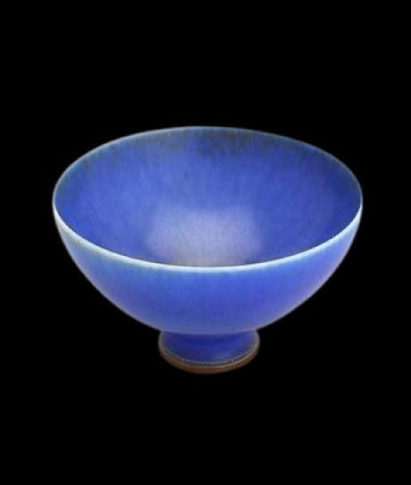
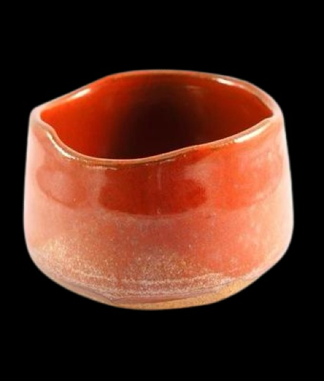
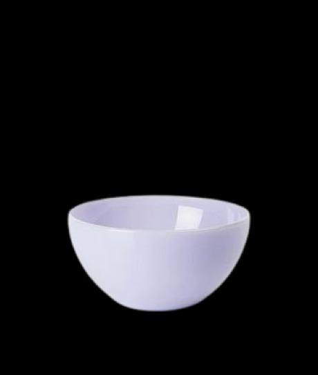
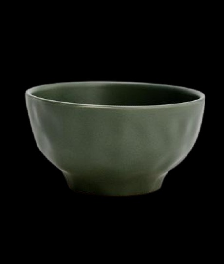
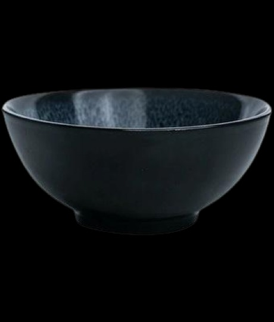
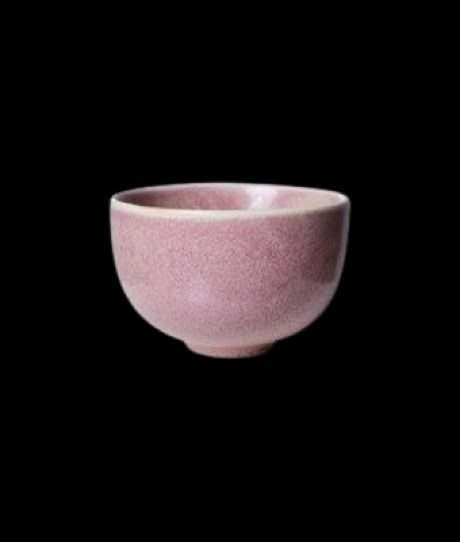
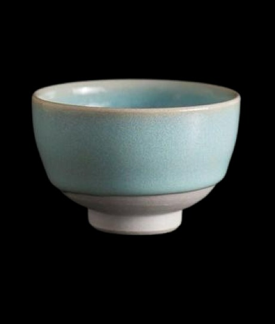
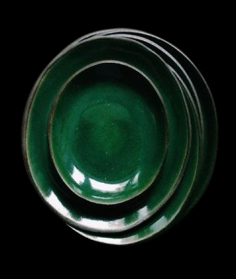
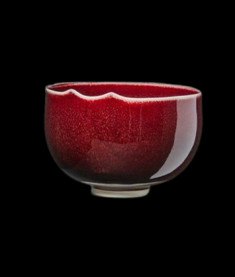

Azul
Esmalte cerâmico azul, trazendo serenidade e elegância para suas criações. Sua tonalidade tranquila é ideal para destacar detalhes e transmitir uma sensação de calma e harmonia. Perfeito para peças que buscam atrair atenção e irradiar sofisticação, adicionando um toque de paz e profundidade ao ambiente.
Laranja
Esmalte cerâmico laranja, trazendo energia e criatividade para suas criações. Sua tonalidade vibrante é ideal para destacar detalhes e transmitir uma sensação de entusiasmo e calor. Perfeito para peças que buscam atrair atenção e irradiar vivacidade, adicionando um toque de dinamismo e alegria ao ambiente.
Lilás
Esmalte cerâmico lilás, trazendo delicadeza e sofisticação para suas criações. Sua tonalidade suave é ideal para destacar detalhes e transmitir uma sensação de tranquilidade e encanto. Perfeito para peças que buscam atrair atenção e irradiar elegância, adicionando um toque de serenidade e charme ao ambiente.
Verde Militar
Esmalte cerâmico verde militar, trazendo robustez e modernidade para suas criações. Sua tonalidade intensa é ideal para destacar detalhes e transmitir uma sensação de equilíbrio e sofisticação. Perfeito para peças que buscam atrair atenção e irradiar solidez, adicionando um toque de elegância e contemporaneidade ao ambiente.
Preto
Esmalte cerâmico preto, trazendo elegância e modernidade para suas criações. Sua tonalidade profunda é ideal para destacar detalhes e transmitir uma sensação de sofisticação e mistério. Perfeito para peças que buscam atrair atenção e irradiar intensidade, adicionando um toque de luxo e ousadia ao ambiente.
Rosa
Esmalte cerâmico rosa, trazendo delicadeza e charme para suas criações. Sua tonalidade suave é ideal para destacar detalhes e transmitir uma sensação de alegria e romance. Perfeito para peças que buscam atrair atenção e irradiar feminilidade, adicionando um toque de leveza e elegância ao ambiente.
Baixa|Alta temperatura
Esmalte cerâmico de alta temperatura, trazendo durabilidade e resistência para suas criações, enquanto o esmalte de baixa temperatura oferece versatilidade e beleza. Suas tonalidades vivas e suaves são ideais para destacar detalhes, transmitindo sensações de solidez e delicadeza. Perfeitos para peças que buscam atrair atenção e irradiar robustez ou elegância.
Verde Escuro
Esmalte cerâmico verde escuro, trazendo sofisticação e serenidade para suas criações. Sua tonalidade profunda é ideal para destacar detalhes e transmitir uma sensação de equilíbrio e elegância. Perfeito para peças que buscam atrair atenção e irradiar tranquilidade, adicionando um toque de modernidade e harmonia ao ambiente.
Vermelho
Esmalte cerâmico vermelho, trazendo paixão e vivacidade para suas criações. Sua tonalidade intensa é ideal para destacar detalhes e transmitir uma sensação de energia e calor. Perfeito para peças que buscam atrair atenção e irradiar emoção, adicionando um toque de ousadia e personalidade ao ambiente.